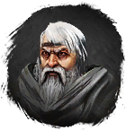

Открыть в интерактивной вики →
| Уровень | 42 |
|---|---|
| Сила (PvE) | 716 |
| Аспект арены | Hegun |
| Здоровье | 800 |
| Мана | 1500 |
| Выносливость | 1500 |
Дроп


Путь

Мрак
Аспект

Hegun
Статистика

Уровень: 42
") 787
787
Здоровье: 800
Мана: 1 500
Выносливость: 1 500
Зоны атаки
Умения
| Удар | Молния | Корни Рой ос |
Иммунитеты / особые умения
-
Команда
-
Локация
Разбойничий Лес